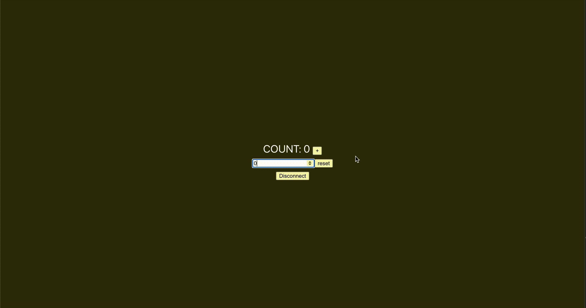

Use Terrain with the testnet#
The Bombay testnet is used for testing transactions on the Terra network.
Prerequisites#
Create a Bombay wallet#
Create a new wallet using the Terra Station extension. It’s recommended that you name this wallet “Bombay” or “testnet” so it’s easy to remember.
After creating a Bombay wallet and storing the seed phrase, request funds from the testnet faucet:
Danger
Make sure you have your seed phrase stored somewhere since you will need it to complete this tutorial.
Counter tutorial#
After creating a testnet wallet, you are ready to use Terrain. This short tutorial walks you through setting up your project and creating a simple counter.
1. Scaffold your dApp#
Scaffold your new application:
terrain new my-terra-dapp
cd my-terra-dapp
npm install
Project structure#
The following structure shows your scaffolded project:
.
├── contracts # The contracts' source code.
│ ├── counter
│ └── ... # Add more contracts here.
├── frontend # The front-end application.
├── lib # Predefined functions for task and console.
├── tasks # Predefined tasks.
├── keys.terrain.js # Keys for signing transactions.
├── config.terrain.json # Config for connections and contract deployments.
└── refs.terrain.json # Deployed code and contract references.
2. Configure the testnet#
Before deploying, Terrain needs to learn how to access your Bombay wallet. To do this you’ll need to modify keys.terrain.js in the generated project.
Modify the configuration and input your seed phrase to look like this:
module.exports = {
bombay: {
mnemonic:
"PLACE_YOUR_BOMBAY_SEED_PHRASE_HERE",
},
};
3. Deploy#
To deploy the application, run the following command:
terrain deploy counter --signer bombay --network testnet
The deploy command performs the following steps automatically:
Builds the counter smart contract.
Optimizes the counter smart contract.
Uploads counter smart contract to testnet.
Instantiates the deployed smart contract.
Warning
If you get the following error:
CLIError: account sequence mismatch, expected 1, got 0: incorrect account sequence
Wait a few seconds then try the deploy command again.
Deploying with Terra Station#
Besides the CLI approach above, there is also the option of deploying and interacting with your contracts on testnet through the Terra Station UI.
Compile your project with
terrain. If you have localterra running, this can be done withterrain deploy <project> --signer test1. This will build the wasm bytecode and output a .wasm file such as artifacts/counter.wasmYou can now upload this contract to the testnet via Station. Go to https://station.terra.money/contract and click on “Upload”
Upload the .wasm bytecode. This step will generate a
codeIdwhich will be used for initializing the contract.Go back to the Contract page on Station and instantiate your contract by passing in the
codeIdand parameter ({ "count": 0 }) for “Init msg”.Now, the contract is deployed as a MsgInstantiateContract transaction type. You will be able to see the address of the newly initialized contract in the logs at the bottom of the transaction details. (example)
Search for your contract address on the Contract page of Terra Station. You can now execute a query or command against your contract. The payloads must be in JSON format. A command execution (with Execute) might look like:
{ "increment": {} }
Optional
If you have a frontend, update your client-side
refs.terrain.jsonto reflect the latest codeId and deployed contract address.
4. Interact with the deployed contract#
The Terrain template comes with several predefined helpers in lib/index.js. Use them to start interacting with your smart contract:
Run
terrain console --network testnet.With the console open, increment the counter by running the following:
await lib.increment(wallets.bombay);
Make sure to pass your Bombay wallet to the increment command.
terrain consolemakes wallets specified inkeys.terrain.jsavailable in thewalletsobject.You can get the current count by using:
await lib.getCount()
After incrementing once,
await lib.getCount()will return:{ count: 1 }
5. Front-end scaffolding#
Terrain also scaffolds a very simple front-end.
In the Terra Station Chrome extension, switch the network to
testnet.To use the front end, run the following commands in order. The terrain sync-refs command copies your deployed contract addresses to the front-end part of the codebase.
cd frontend npm install npm start
With
testnetselected in Terra Station you can now increment and reset the counter from the front end.
Demo#

Advanced usage#
For more advanced use cases such as deploying to the testnet or mainnet, see Terrain’s readme.